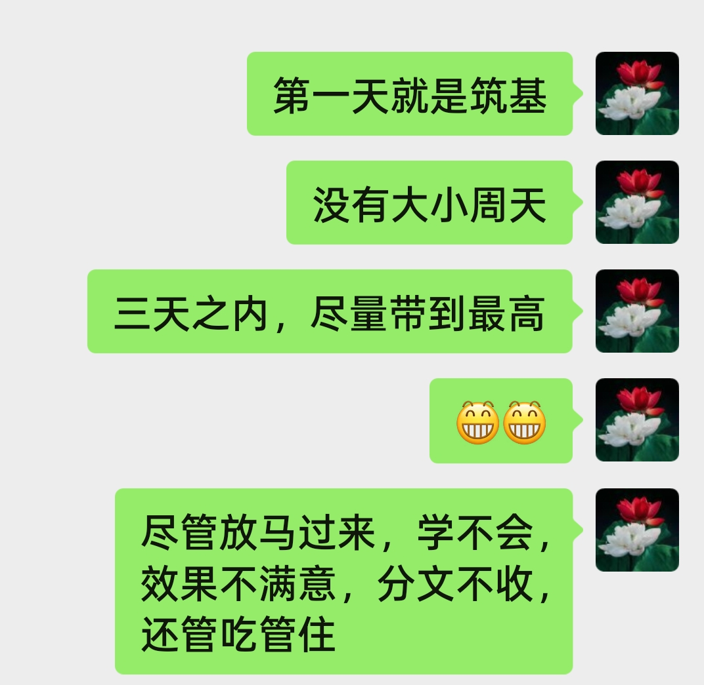

20260728青岛有学生要过来 这承诺咋样
原始对话记录
青岛有学生要过来
这承诺咋样
以下为编者整理的主题文章
编者整理 · 主题文章
一句承诺怎么判断：术数记录里的常见问法
一句话结论：本页原记录是一张图片加一句"青岛有学生要过来，这承诺咋样"，文字极少，属图片为主的记录。编者围绕"如何判断一句承诺"这一主题作知识性说明，并强调术数讨论不构成对人或事的保证。
一、本页是什么（图片为主）
原记录只有一张图片，配寥寥一行字："青岛有学生要过来，这承诺咋样"。没有更多来龙去脉。本页原记录以图片为主、文字极少，无法还原具体人事，因此这里只就标题涉及的主题——"承诺该怎么判断"——作一般性说明，不虚构当事人细节。
二、"承诺"为什么常被拿来问
在术数圈的日常问事里，"某人说要来/要合作/要兑现，靠不靠得住"是高频话题。原因也现实：承诺介于"已经发生"和"尚未发生"之间，信息不足、心里没底，人们便容易求一个"准头"。本条记录里的"这承诺咋样"，正是这种心里没底时的问法。
三、判断承诺的两种传统思路
结合本集群其他记录，传统上大致有两条路子：
- 命理/术数推演：报出生辰或起盘，从干支、五行生克等符号去论关系与走向（参见本集群《用术数挑合伙人》）。
- "看气场"式说法：以所谓"气场""透视"来判断对方诚伪，但这无从验证，只能当作个人表述（参见《合伙人选择》）。
四、更该依靠什么
把话说透：无论哪种推法，都属于传统术数/民俗的讨论，不能拿来给"某人会不会兑现承诺"下保证。真正可靠的判断，仍要看对方过往的履约记录、书面约定、可核实的现实依据。术数内容顶多算个"起话头"的由头，不宜当依据。
五、常见问题
问：这条记录到底讲了什么事？ 原页只有一张图和"青岛有学生要过来，这承诺咋样"一句，信息太少，无法确认具体人事，本页只作主题说明。
问：能不能用术数判断承诺真假？ 不能得出可靠结论。本页不承诺任何预测准确，也不构成对他人的评判。
问：那遇到这类事怎么办？ 以事实和书面约定为准；涉及合作、金钱，宜咨询专业人士。
六、提醒
- 本页是图片为主、文字极少的记录，只作主题性整理；
- 判断承诺靠证据与约定，不靠术数；
- 全站内容按传统文化/民俗看待，请理性、守法。
说明与免责：本站为民间修炼、民俗文化与传统文化资料的整理与记录，内容源自传承者口传与个人修习体会，仅供文化交流与研究参考，不构成医疗、健康、投资或任何功效承诺。所述内容属传统术数范畴，请理性看待；如身体不适，请及时就医。请遵守法律法规与公序良俗。